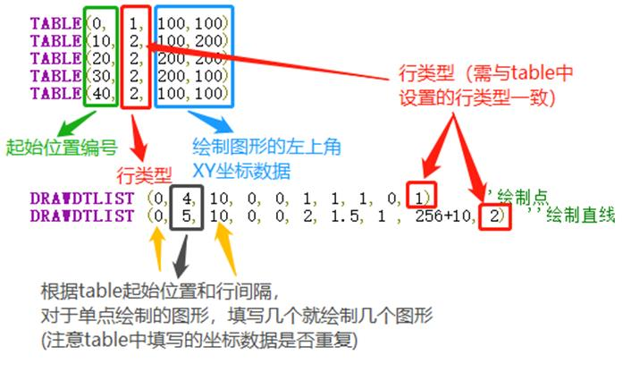
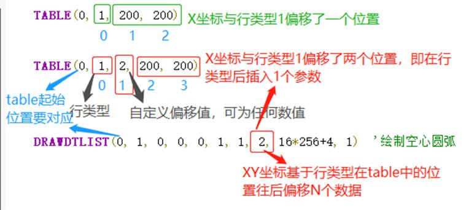
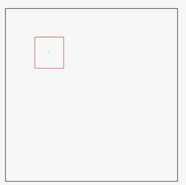
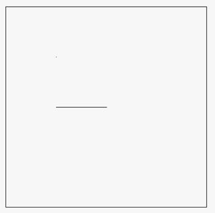
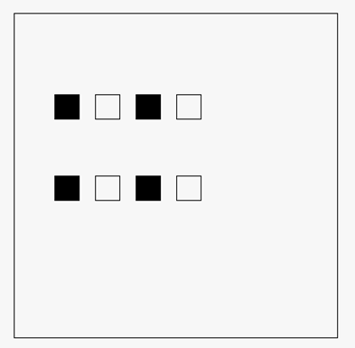
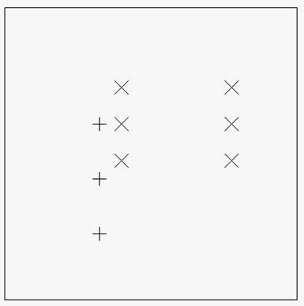
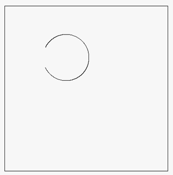
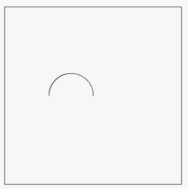

|
类型 |
显示指令 | |||||||||||||||||||||||||||||||||||||||||
|
描述 |
绘图指令，用于加快TABLE数据的绘制。 此指令只能在自定义元件的绘图函数内使用，请查看自定义元件调用函数参考例程。 | |||||||||||||||||||||||||||||||||||||||||
|
语法 |
DRAWDTLIST (dtstart, imax, ispace, fxstart, fystart, fxlevel, fylevel, imode , [drawtype], [TYPE1，TYPE2, TYPE3, TYPE4]) dtstart：table起始位置，指向第一行的行类型 行类型：由用户自行定义，即可设置0为点或直线，1也可为点或直线。 imax：行数（设置的table的组数） 行数不一定和设置的table组数相等，可根据实际情况填写。 ispace：行间隔（即每个table起始位置之差，若imode参数为1时，则行间隔一般不能<2；若imode偏移了N个数据，则最小行间隔需相应增加N） fxstart：左上角X坐标的偏移量，相对于tbale中设置的X坐标进行偏移（>0―向左偏移，<0―向右偏移，=0不偏移） fystart：左上角Y坐标的偏移量，相对于tbale中设置的Y坐标进行偏移（>0―向上偏移，<0―向下偏移，=0不偏移） fxlevel ：table中X坐标的数值比例 fylevel：table中Y坐标的数值比例 imode：存储格式
drawtype：显示方式
TYPE1~TYPE4：需要绘制的行类型，一次最多可填4种行类型做同样的绘制(即该参数在一条DRAWDTLIST指令最多填4个行类型)，必须和table中设置的行类型对应才能绘制图形。 | |||||||||||||||||||||||||||||||||||||||||
|
适用控制器 |
支持RTHmi（建议用最新固件） | |||||||||||||||||||||||||||||||||||||||||
|
例子 |
行类型数据存储在table中第一个位置，在该例子中，1表示单点，2表示直线，X坐标存储在第二个位置，Y数据存储在第三个位置，XY坐标不填默认为0，此处的XY坐标是相对于自定义元件而定，自定义元件坐标以左上角为原点(0,0)。 
imode(1-9)存储格式参数的使用方法：  例一：绘制一个点 TABLE(0, 1, 100,100) DRAWDTLIST (0, 1, 10, 0, 0, 1, 1, 1, 0, 1) '绘制点（点的位置在矩形框中，图中矩形并非指令绘制，仅作提示）  例二：绘制一段直线 TABLE(10,2,100,200) TABLE(20,2 ,200,200) DRAWDTLIST(10,2,10,0,0,1,1,1,256+10,2) ‘绘制直线（实线）  例三： TABLE(0,2,100,100) TABLE(10,2,100,200) TABLE(20,2,200,200) TABLE(30,2,200,100) DRAWDTLIST(0,4,10,0,0,1,1,1,16*256+4,2) ‘绘制空心矩形 DRAWDTLIST(0,4,10,40,0,1,1,1,16*256+3,2) ‘绘制实心矩形  例四： TABLE(0,1,100,100) TABLE(3,1,100,150) TABLE(6,1,200,150) TABLE(9,1,200,100) TABLE(12,1,100,200) TABLE(15,1,200,200) DRAWDTLIST(0,6,3,0,0,1.5,1,1,10*256+6,1) ‘绘制6个叉（X坐标扩大1.5倍） DRAWDTLIST(9,3,3,80,0,1,1.5,1,10*256+5,1) '绘制3个十字架（Y坐标扩大1.5倍，并且X坐标往左偏移80）  例五： TABLE(0,1,100,100) ‘圆弧的起点 TABLE(10,1,200,150) ‘圆弧的中间点 TABLE(20,1,100,150) ‘圆弧的结束点 DRAWDTLIST(0,3,10,0,0,1,1,1,10*256+11,1) ‘绘制圆弧（三点画弧的方式）  例六：画圆弧 TABLE(0,1,200,200) TABLE(10,1,150,150) TABLE(20,1,100,200) DRAWDTLIST(0,4,10,0,0,1,1,1,16*256+12,1) ‘画半圆弧  | |||||||||||||||||||||||||||||||||||||||||
|
相关指令 | ||||||||||||||||||||||||||||||||||||||||||